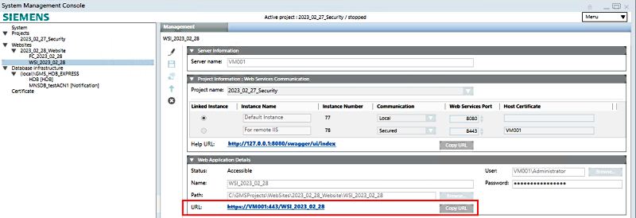
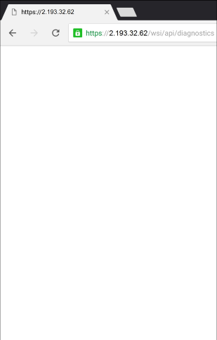

Test Connection to Web Service
Obtain the Server URL
When signing into the mobile app, you must enter the Server URL (that is, the address for connecting to the Web Service application of the management platform). This URL can be obtained from the management platform itself.
- On the computer running the IIS web server, start the System Management Console (SMC) application.
NOTE: Depending on the type of deployment, the computer running the IIS web server may be the Desigo CC Server or a separate remote IIS web server.
- In the SMC tree, under Websites, navigate to and select the node of the Web Service application.
- In the Web Application Details expander, the URL: is the one to enter in the Sign-in screen of the mobile app.
NOTE: You can omit the default port number (:443) from this address. For example, instead of https://2.193.32.32:443/wsi/ you can use https://2.193.32.32/wsi/ to sign in. - Click the URL: to check that it is working. Also click the Help URL: in the Project Information expander to verify that it is working.
- If these URLs are working on the computer, you can now also verify that they are accessible using the mobile browser, see below.

Check the Server URL Using a Browser
Before you try signing into the app, you can test the connection to Web Service application of the management platform as follows:
- Obtain the correct server URL for the Web Service application as described above. In this example, the URL is
https://VM001/WSI_2023_02_28. - Check that the mobile device has the correct internet or intranet connection (see Check Mobile Device internet/Intranet Connection).
- Start a browser on the mobile device and, in the address bar, enter a URL composed as follows:
<web service URL as shown in SMC>/api/diagnostics
(In this example:https://VM001/WSI_2023_02_28/api/diagnostics) - If the connection to the Web Service application is successful, the blank diagnostics page (as shown in the image) will load, and the address bar will indicate that an https:// connection is established. If the connection is unsuccessful, the browser will display an
unable to connecterror message.

Check the Certificate Used by the Web Service Application
If the mobile device fails to establish a secure connection to the Web Service application URL in the above browser test, or if the mobile app gives a certificate error when signing in, it may be because:
- The required certificate is not installed on the mobile device.
- The Web Service application uses a certificate that is expired, invalid, or incorrectly configured (for example, not Issued to the full computer name of the computer hosting the website).
To check the certificate used by the Web Service application, do the following:
- On the IIS web server computer, in the System Management Console (SMC) expand the Websites node and select the parent website of the Web Service application.
- The website Details expander displays in the Management tab on the right. The certificate set in the Certificate issued to field is the one the mobile app must recognize.
- Review the steps to configure the certificates for the mobile app website and repeat them if necessary to correctly configure the certificate, and install the corresponding root certificate (if necessary) on the mobile device.